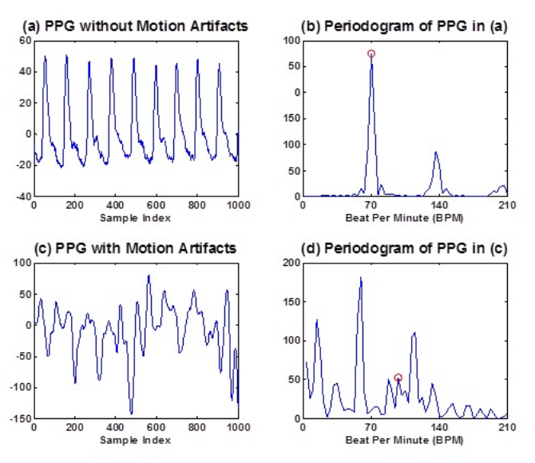

|
Heart rate monitoring using PPG sensors
Files: Essay Summary: This project was done as part of my bachelor thesis. The goal of this thesis was to reduce the effects of motion artifacts in photo- plethysmographic (PPG) signals and therefore make the retrieving of the heartbeat more accurate. This can be used to further improve the accuracy of wearable sport tracking devices and smart watches. The recording of the PPG signals was done with two Infra-Red light emitting diodes and two sensors that measured the changes in the blood volume. Since the measurements were done at the wrist, the PPG signal can be corrupted with motion artifacts. In this thesis different techniques are used to filter these motion artifacts out of the PPG signal. The two types of adaptive filters that were tested were the Least Mean Squares and Recursive Least Squares filters. They were tested on 12 different data sets containing data from different test subjects running at various speeds.  |